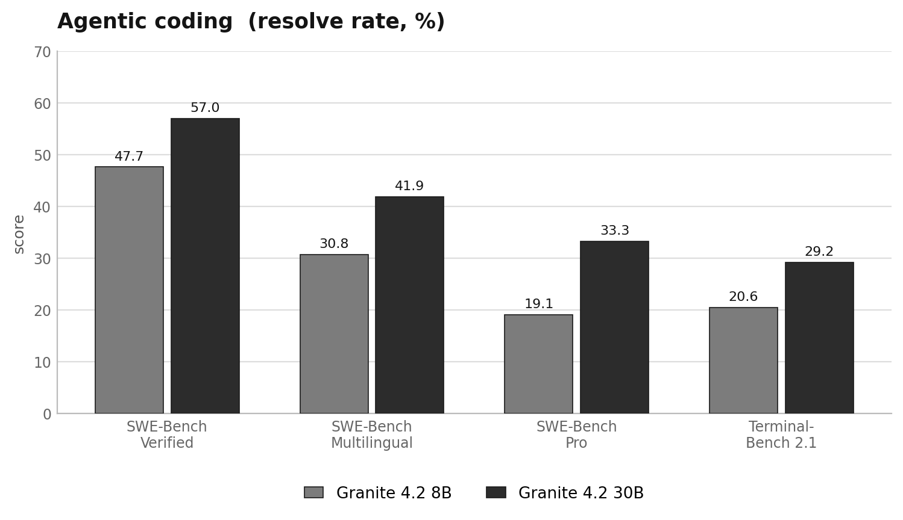

05 Hugging Face 게시일 2026.08.25
IBM, Granite 4.2 추론 모델군 내놨다

IBM이 Granite 4.2를 공개했다. 이 모델군은 복잡한 질문을 단계적으로 풀고, 필요하면 도구도 호출하는 데 초점을 맞췄다. 비개발자 관점에서는 답만 내는 챗봇보다, 생각 모드와 실행 기능을 함께 갖춘 업무용 AI에 가깝다.
핵심 브리핑
Granite 4.2는 추론에 초점을 맞춘 Granite 계열의 새 모델군이다. IBM은 3B, 8B, 30B 세 가지 크기로 내놨다. 세 모델 모두 디코더 전용 밀집형 구조를 쓴다. 모두 thinking 모드와 non-thinking 모드를 지원한다. 쉬운 질문에는 low-effort thinking 모드도 쓸 수 있다.
IBM은 세 모델을 처음부터 새로 학습했다. 사전학습에는 약 15조 토큰을 썼다. 학습은 5단계로 진행했다. 마지막 단계에서 컨텍스트 창을 512K 토큰까지 늘렸다. 이후 추론, chain-of-thought, 에이전트 궤적 데이터를 넣어 SFT를 진행했다. 마무리 단계에서는 다단계 강화학습 파이프라인을 적용했다.
8B와 30B는 에이전트 강화학습을 더 거쳤다. 이 단계에서 모델은 실제 샌드박스 환경 안에서 도구를 호출했다. 코드 편집과 실행도 배웠다. 터미널 조작과 웹 검색도 익혔다. 세 모델 모두 네이티브 도구 호출을 지원한다.
- 모델 크기: 3B, 8B, 30B
- 사전학습 데이터: 약 15조 토큰
- 최대 컨텍스트: 512K 토큰
- SFT 데이터: 약 720만 샘플
- SFT 토큰: 약 100B 토큰
- 학습 가능한 SFT 토큰: 약 65B 토큰
- 라이선스: Apache 2.0
- 서빙 호환: OpenAI 호환 엔드포인트, SGLang 지원
도구 호출 형식도 실무에 맞췄다. vLLM 같은 OpenAI 호환 엔드포인트로 서빙하면 OpenAI function-calling 형식으로 도구 호출을 내보낸다. 별도 접착 코드 없이 에이전트 프레임워크에 연결할 수 있다는 뜻이다.
| 항목 | 내용 |
|---|---|
| 모델 크기 | 3B / 8B / 30B |
| 사전학습 데이터 | 약 15조 토큰 |
| 최대 컨텍스트 | 512K 토큰 |
| SFT 샘플 | 약 720만 개 |
| SFT 전체 토큰 | 약 100B 토큰 |
| 라이선스 | Apache 2.0 |


스펙과 도입 조건
세 모델은 같은 설계와 학습 흐름을 공유한다. 기본 구조는 GQA, RoPE, SwiGLU, RMSNorm, 분리된 입력·출력 임베딩으로 구성됐다. 아키텍처 세부 수치는 공개했지만, 실제 운영에 필요한 GPU 수량이나 메모리 요구량은 이 글에 없다. 따라서 사내 도입 검토는 서빙 레시피와 별도 실측이 필요하다.
라이선스 조건은 비교적 단순하다. IBM은 전 모델을 Apache 2.0으로 배포했다. 상용 환경 검토에 유리한 조건이다. 배포 방식도 범용 도구에 맞췄다. OpenAI 호환 엔드포인트와 SGLang 레시피를 지원해 기존 애플리케이션 연결 부담을 낮췄다.
학습 데이터 구성도 공개했다. SFT 데이터는 에이전트형 31.6%, 비에이전트형 68.4%로 섞었다. 30B는 에이전트 코딩 중심의 2차 SFT를 한 번 더 거쳤다. 이때 원래 SFT 말뭉치의 약 16%를 리플레이 데이터로 남겼다. 기능을 늘리면서 기존 능력을 잃지 않기 위한 설정이다.
업계의 움직임
아직 공개된 반응은 확인되지 않았다.
시사점과 체크포인트
우리 회사가 이 모델군을 볼 때는 성능 순위보다 운영 조건을 먼저 확인하는 편이 낫다. Apache 2.0 라이선스와 OpenAI 호환 서빙은 PoC를 빨리 시작하기 좋다. 반면 하드웨어 요구량과 실제 추론 지연시간은 이 글에 없다. 인프라팀과 플랫폼팀이 별도 측정을 해야 한다.
체크포인트도 분명하다.
- 보안팀: 도구 호출 범위를 어디까지 열지 정한다.
- 플랫폼팀: vLLM이나 SGLang 기준 배포 경로를 검증한다.
- 업무부서: thinking 모드와 non-thinking 모드의 응답 차이를 테스트한다.
- 아키텍트: 512K 컨텍스트가 실제 문서 검색 비용을 얼마나 줄이는지 본다.
- 리스크관리: 모델이 생성한 추론 과정을 로그로 남길지 결정한다.
8B와 30B는 에이전트형 작업에 맞춰 더 학습했다. 그렇다고 내부 시스템 권한을 바로 열 수는 없다. 코드 실행, 터미널 조작, 웹 검색을 지원하는 모델일수록 권한 분리와 감사 로그 설계가 먼저 필요하다.
주요 용어
원문 정보
제목: Granite 4.2 LLMs: How They're Built
게시일: 2026.08.25
출처 URL: https://huggingface.co/blog/ibm-granite/granite-4-2